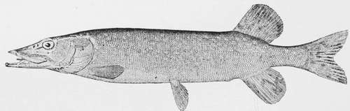

The Pike
Description
This section is from the book "American Game Fishes", by W. A. Perry. Also available from Amazon: American Game Fishes: Their Habits, Habitat, and Peculiarities; How, When, and Where to Angle for Them.
The Pike
"The Pike belongs to the family of the Esocidae. Body elongated, sub-cylindrical, with small scales, margin of upper jaw formed by intermaxillaries and maxillaries laterally: mouth very large, jaws elongate, depressed; teeth strong, hooked, unequal on intermaxillaries, vomer and palationes: dorsal short, opposite anal: gill-openings wide; air bladder present; voracious fish of the fresh waters of the northern regions. Genus one; species, six or seven."-Jordan.
E s ox Lucius-Esocidoe.
The Pike family are familiar objects to any person whose habits lead him to frequent the banks of sharp-running rivers or cold clear lakes, but especially to the boy who goes a-fishing. To distinguish between the branches of the family, however, the boy must either lay them side by side, or if he be taking object-lessons in free-hand drawing, let him sketch a Pike, and then continue his studies; there will remain an impress on his brain that years of business cares will not efface. Whenever in after years the strong, prominent features of a northern Pike are introduced to him he recognizes the friend of his boyhood days. The Pike to him remains a Pike forever. What is a Pike?
Ichthyological : A fish of the genus Esox, named for its length, and shape or form of its snout. It is distinguished bv its projecting lower jaw and its full, prominent eyes.
Its head and back are a dark green, shading nearly to black-graduating to a pearly white on the belly; the belly fins, four of them, are green, tinging to pinkish hue around the edges, the dorsal and anal fins being large, of bony, sinewy structure, giving the fish enormous power in the water. These two, with the caudal fin, are dark green in color. Its sides are marked by bars or blotches of dusky white streaks running from the back down toward the white of the belly. Its caudal fin attracts the attention of any one examining the fish; it is not truncate, but just enough bifurcated to give it its almost lightning speed in turning, or holding its own in a sharp current.
The prominent features in the Pike are his large operculum, or cheek-bone, his strong jaws, and his general build. He is designed for speed, and for fighting.
Where Do Pikes Live?
His home is in the large lakes and rivers of the North-west, especially from the St. Lawrence throughout the chain of lakes connecting therewith; the lakes and rivers of Ohio, Indiana, Michigan, Wisconsin, Minnesota and the water-shed of Canada, connecting with large lakes leading to the St. Lawrence water-shed. You may find him in the bays connecting with these lakes wherever the long wiry rushes grow, or where the yellow lily-pad shows. It grows to a length of three feet-sometimes more-and weighs up to about eighteen or twenty pounds. Specimens have been taken in Michigan, and along the bays connecting with the north shores of Lake Superior, weighing up to twenty-five pounds.
It is a powerful fish, and is no coward; it will fight as viciously as a terrier. We have seen smaller Pike with jaws locked and lashing the water around them like a boiling cauldron. Occasionally letting go and backing out, they would again rush at each other with open jaws, and keep up the fight until one is beaten and driven away, or until both are exhausted.
Some years ago I found two dead, with both jaws fast set, so that they could not be pulled open. Both of them were handsome male fish, and must have fought fiercely.
Pike-Esox lue ins.
for their bodies were cut all along the sides and bellies.
The Pike is not particular as to the quality of his food. Anything that is alive or can be digested is eaten and enjoyed. I can remember in my boyhood days, a smart spaniel pup that would go anywhere his young boss told him to go. I sent him across the large fish-pond, in the grounds at the rear of the old home. While swimming across he began yelping most pitifully, and put on a spurt to the bank of the pond where I was standing; I was on my knees ready to lift him out; a big Pike was following him. I caught the dog by the neck, pulled him out and took him to the house. Mother dressed a badly lacerated hind leg. Boy-like, I was fond of that pond, and after getting several duckings that closely approached drowning, and thrashings almost without number, and after a sheep had been drowned in the pond, it was decided that it must be drained and filled up. The big Pike that snapped at the spaniel was there, but not a sign of a turtle of any kind. There were fish in abundance, but by far the largest and handsomest was the pup's enemy, which, when dressed, weighed twelve pounds.
My home was near a large paper-mill, having an abundance of cold spring-water draining a valley twenty miles long. Two rivers and several creeks fed the large streams. It was a splendid feeding and breeding ground for the Esocidae. Trout were also found in the smaller streams, but in the two rivers the Esocidae could be found anywhere. Abundance of flags and rushes lined the banks of one stream; these were the home of the hell-diver family-and of the mud hen. Many times have I laid watching the antics of the young of both species. As they grew larger the mother ' bird would take them into the larger stream. One day, while I was watching the diving and preening of the family, one of them suddenly disappeared under the water. The hen-bird began to gather the little ones around her with such a squawking and clucking that I, too, grew interested and excited. She hustled the young birds up to the bank of the stream, but too late! Before she could get them all out, the wicked eyes and prominent snout of a big Pike came to the surface and sucked down another little birdling of the flock. I rose in the brush that hid me, and saw the cunning face of the Pike. And if ever a fish laughed, he did! The mother bird saw me too, and hustled the remainder of her family into the rushes.
We were raising some young ducks at the time; a fancy breed; but they had been hatched by a hen. I predicted they would be Pike-food before they were a week old. The old hen strutted around, proud of her family, but one day she led them into the meadow through which the tail-race of the mill ran-a stream of water five feet deep-and the home of the Pike and the Pickerel.
Hearing the cackling of the hen, I ran out and found the ducklings in the water, and jumping into the boat, drove them out, after a long chase. Once or twice I saw the sharp dash of one of the Esocidae after them, but I got them in safely. Mother promised me something handsome, if I could keep them out of the water for a few days, until they got big enough to go with the old ducks. Coming out of the mill the next day, I saw the ducklings paddling around in the rushes, and the old ducks near them, quacking and calling as if something were wrong.
I dashed through the hall of the house, catching up my sixteen-gauge single gun as I went, banging doors behind me and all the time vowing dire vengeance on any specimen of the Esocidae that might show his long face.
Just as I jumped into the boat, after counting them, I heard the minature, peeping "qu-a-a"-of a duckling, but it was never finished! It disappeared under the water, and I saw the broad tail of a big Pike as he swung out into deeper water. Of eleven ducklings five went this way; the others we saved until they could take care of themselves.
Is it any wonder I exercised all the cunning of a boys' nature-all the budding ingenuity of a mechanical taste, just developing, to circumvent these "varmints?"
Another brood of ducks was being raised at this time. A dead bunch of yellow down was brought out one morning, causing a shout that rung through the house. "Mr. Pikee, I am going to get you now!" I cunningly cut it open, inserted a cork in the small duck, fixed my double hook inside, bent the snood on my line, and was ready for business. Jumping on a raft that I used for fishing, I drifted down-stream, letting my line and the duckling float ahead of me. I dropped my stone anchor and prepared for a surprise-pulling off my shoes to be ready for a swim, if need be. Almost 100 feet of line had run out with the current when-a plunge! and quick as a flash my duckling had gone. I let him go for some time without offering any resistance, for I wanted to be dead sure of the long-snouted poacher. I allowed him all the time he wanted to taste his duckling, but at the first move he made to run down-stream, I struck. I had a full hand! A mad fish-especially a powerful Pike-is no light task for a boy to handle. For some minutes he rushed up-stream, downstream, across-every way, to find a friendly stump. "Aha! my long-nosed beauty! your duck-hunting days are over!" I knew every hole in the tail-race, almost every yard of the water, as well as the Pike, and had swam the whole length of that tail-race too many times for any Esox to fool me. Managing somehow to pull up the stone-anchor, and take a turn of the anchor-line around one of the big spikes in the raft, I drifted, yelling and shouting as any boy would under similar circumstances. Some of the men employed in the mill, seeing my Indian dance, had run down the river banks, and were giving me plenty of advice. Gradually drawing in the fish until close to the raft, I saw that I had him played out, and taking the line into my fingers, I dropped my rod, and quick as thought, plumped flat onto my stomach, slipped my forefinger into the fish's gills and hauled him on the raft. Then jumping for my pushing-pole I gave him a crack over his big eyes that paralyzed him. Lifting the pole to give him number two, the weapon hung fire. My line had, in some way, coiled around the pole, and instead of the blow coming on the head of the Pike, it came across my bare toes! In a flash I was bottom-side-up under the water, fussing and spluttering as a boy always does when anything hurts him. I fairly howled with pain, until I saw that the squirming Pike was getting too near the edge of my raft, when, towing it to the bank, I transferred my rod, line and fish, to dry ground, and then "whoop-e-e-d" over my first big Pike! It was only about thirty inches long, but it was the fish that had taken such a fancy to our downy ducks; and my victory over him, won, as it was, at the expense of a wound and an involuntary bath, was a most glorious achievement.
The hiding-place of the Pike is under a channel bank where rushes grow to the edge of the channel; or, in the vicinity of tree-stumps and submerged logs, especially if the old roots project out into the running streams, he can often be found in the deep water, a little above the mouth of a channel, between two lakes, or in the pool at the foot of such channel.
Continue to: